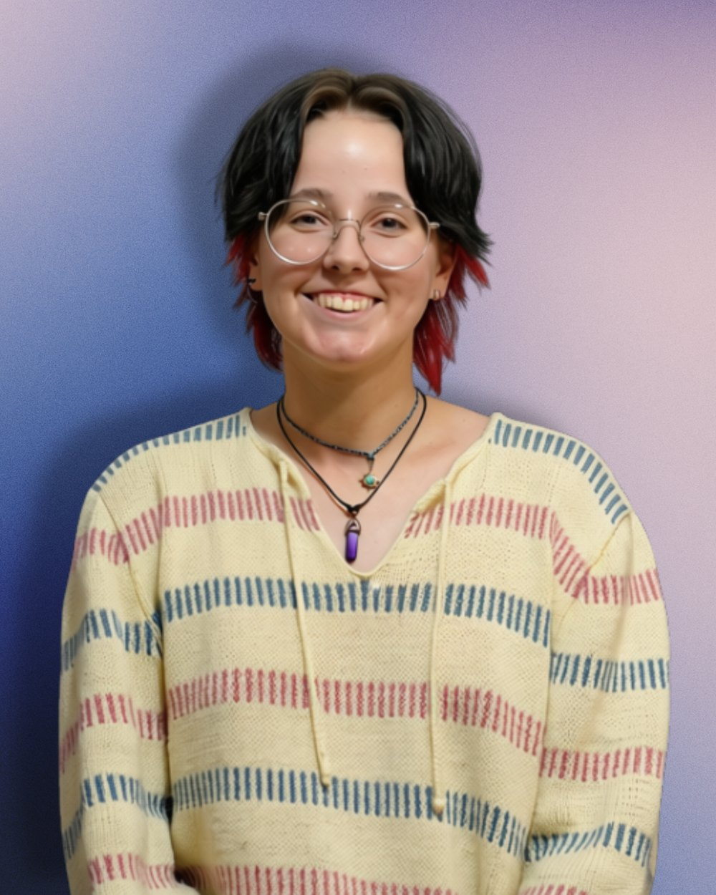
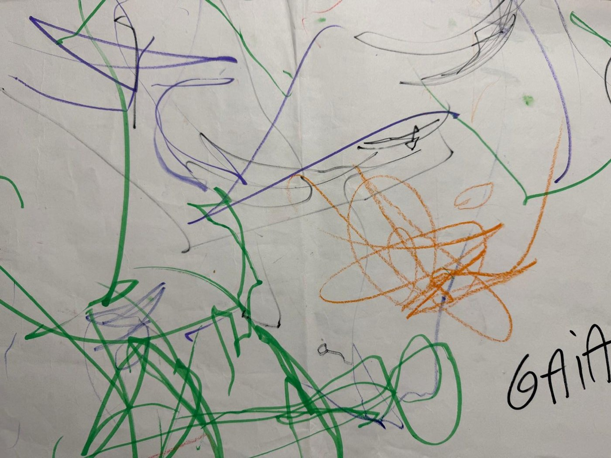
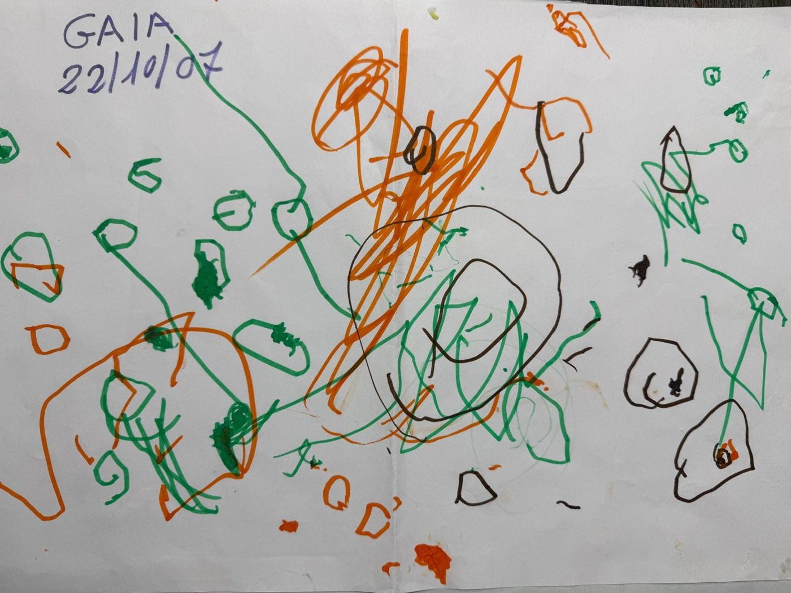
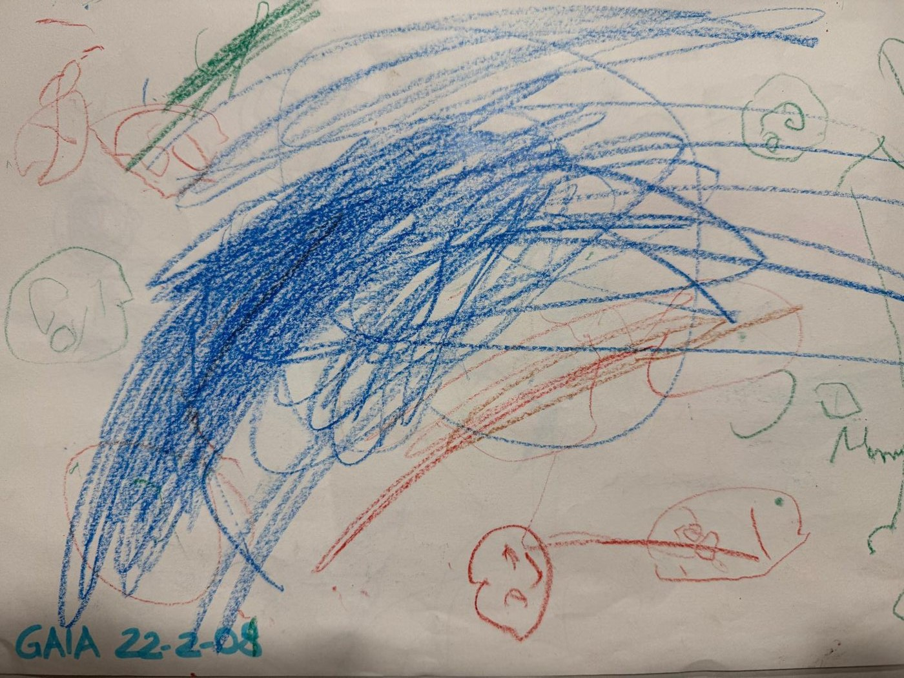
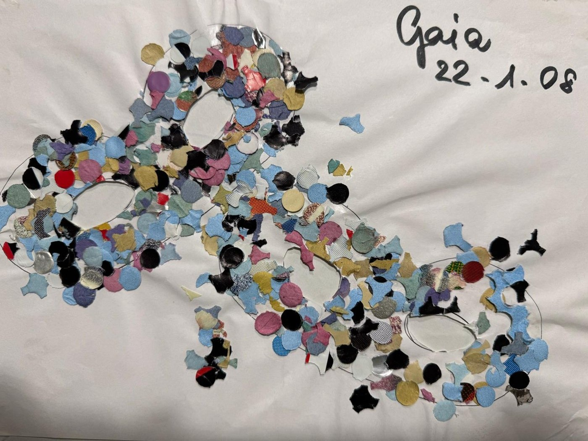

Segno
Mark
Grafite, carboncino, pastelli e olio. Tutto quello che nasce dalla mano su carta o tela.Graphite, charcoal, pastel and oil. Everything that starts with a hand on paper or canvas.
Materia
Matter
Scultura, carta, legno, cartone, collage e stampa. Lavori che si toccano e occupano spazio.Sculpture, paper, wood, cardboard, collage and print. Work you can touch, that takes up space.


Pixel
Identità visive, app, illustrazione digitale e animazione. Il lavoro che vive su uno schermo.Visual identities, apps, digital illustration and animation. Work that lives on a screen.
Luce
Light
Fotografia: esercizi, ritratti, paesaggi e racconti per immagini, divisi per anno.Photography: exercises, portraits, landscapes and stories in pictures, sorted by year.



Chi c'è dietro il drago
Behind the dragon
Mi chiamo Gaia, ma tutti mi chiamano Sam. Studio graphic design al Wayne State College, in Nebraska, e Flayris è il nome che ho dato al mio modo di lavorare.My name is Gaia, but everyone calls me Sam. I study graphic design at Wayne State College in Nebraska, and Flayris is the name I gave to the way I work.
Disegno a intuito: parto da una sensazione e lascio che l'immagine arrivi dopo. Mi interessa il punto in cui un'emozione diventa forma, che sia un marchio, un lettering o un'interfaccia, e anche il punto in cui quella traduzione si rompe.I draw by instinct: I start from a feeling and let the image arrive later. I care about the moment an emotion turns into form, whether it becomes a logo, lettering or an interface, and about the moment that translation breaks.
Le origini
The origins
Prima ancora di camminare lasciavo segni su qualsiasi superficie, muri e pavimenti compresi. Ecco da dove è partito tutto.Before I could even walk I was leaving marks on every surface I found, walls and floors included. This is where it all began.



